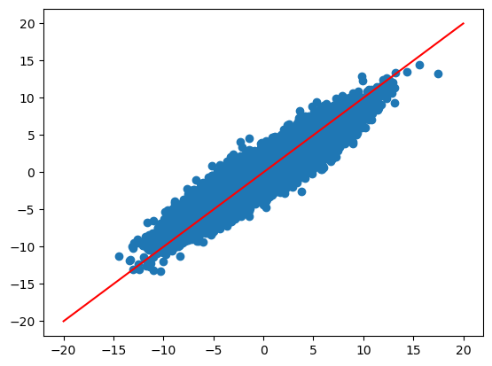
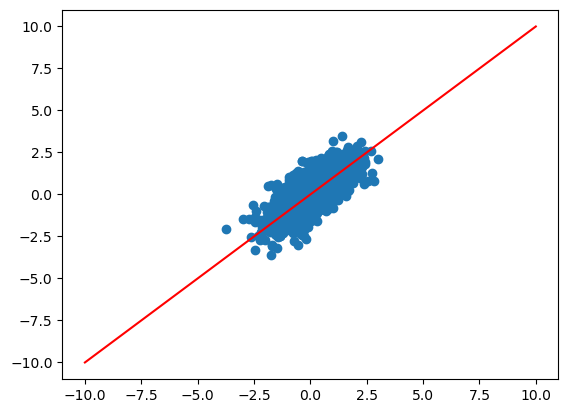
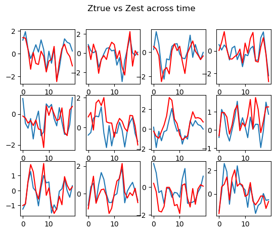
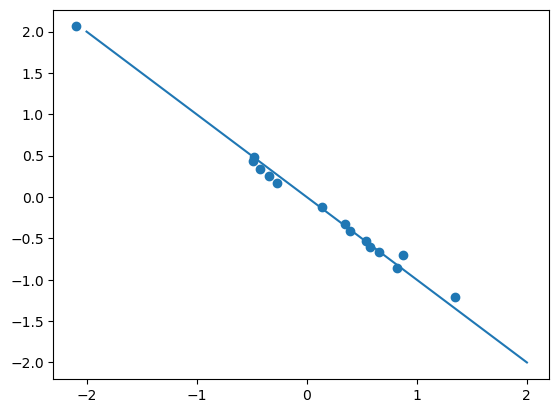

import torch
from torch import nn
import numpy as np
import math
import matplotlib.pyplot as plt
n = 100
p = 15
T = 20
k = 8
q = 1
DIMENSIONS_Y = (n, T, p)
DIMENSIONS_X = (n, T, k)
DIMENSIONS_Z = (n, T, q)
DIMENSIONS_U = (n, 1, p)
# TODO: refactor to have a module of two modules: encoder and decoder
class GLLVM_longitudinal():
def __init__(self):
self.encoder = Encoder()
self.decoder = Decoder()
# nuisance parameters
self.phi = torch.ones(1) * .3
self.var_u = torch.ones((1,1,p))
self.var_y = torch.ones((1,1,p))
self.var_z = torch.ones((1,T,1))
def encoder_fit(self, x, y, z, u, epochs=100, verbose=False):
encoder_loss = nn.MSELoss()
encoder_opt = torch.optim.Adam(self.encoder.parameters())
for epoch in range(epochs):
(zhat, uhat) = self.encoder(x, y)
loss = self.encoder_loss(zhat, z) + encoder_loss(uhat, u)
if verbose:
print(f"\nEpoch {epoch}/{epochs}, loss={loss}")
loss.backward()
encoder_opt.step()
encoder_opt.zero_grad()
return loss
def encoder_loss(self, input_z, target_z):
# here we penalize the variances too !!
phi_input = (torch.sum(input_z[:,1:]*input_z[:,:(T-1)], dim=1) / torch.sum(torch.pow(input_z[:,:(T-1)],2), dim=1)).mean()
phi_target = (torch.sum(target_z[:,1:]*target_z[:,:(T-1)], dim=1) / torch.sum(torch.pow(target_z[:,:(T-1)],2), dim=1)).mean()
return torch.sum(pow(input_z-target_z, 2), dim=[1,2]).mean() + 1e4*pow(phi_input-phi_target, 2)
def update_nuisance_parameters(self, z_sample, u_sample, z_sim, u_sim, lr=1e-1):
# update phi:
# phi_sample = torch.sum(z_sample[:,1:]*z_sample[:,:(T-1)], dim=1) # - self.phi* torch.sum(torch.pow(z_sample[:,:(T-1)],2), dim=1)
# phi_sim = torch.sum(z_sim[:,1:]*z_sim[:,:(T-1)], dim=1) #- self.phi * torch.sum(torch.pow(z_sim[:,:(T-1)],2), dim=1)
# self.phi = self.phi + lr * (math.sqrt(phi_sample.mean()) - math.sqrt(phi_sim.mean()))
phi_sample = torch.sum(z_sample[:,1:]*z_sample[:,:(T-1)], dim=1) / torch.sum(torch.pow(z_sample[:,:(T-1)],2), dim=1)
phi_sim = torch.sum(z_sim[:,1:]*z_sim[:,:(T-1)], dim=1) / torch.sum(torch.pow(z_sim[:,:(T-1)],2), dim=1)
# var_u = torch.mean(torch.pow(u_sample, 2), dim=0)
self.phi = self.phi + lr * (phi_sample.mean() - phi_sim.mean())
#self.var_u = self.var_u * (1-lr) + lr * var_u
def sample(self, n, x=None, z=None, u=None, d=None):
"""Sample a longitudinal GLLVM, potentially with z, u, and d(elta), and return (x, z, u, d, y)"""
with torch.no_grad():
if x is None:
Warning("xb was set to None for sampling. This is usually unwanted unless k=0.")
x = torch.randn((n, T, k))
if z is None:
z = torch.randn((n, T, q)) * torch.sqrt(self.var_z)
if d is None:
d = torch.randn((n, T, q))
if u is None:
u = torch.randn((n, 1, p)) * torch.sqrt(self.var_u)
z = self.AR(z, d)
eps = torch.randn((n, T, p)) * torch.sqrt(self.var_y)
y = self.decoder(x, z, u) + eps
return {"x":x, "z":z, "u":u, "d":d, "y":y}
def AR(self, z, delta):
assert z.shape == delta.shape # we draw the same shape for simplicity, even though we don't need delta for t=0.
for t in range(1, z.shape[1]):
z[:,t] = z[:, t-1] * self.phi + delta[:,t]
return z
def sample_z(self):
return None
class Decoder(nn.Module):
def __init__(self):
super().__init__()
# decoder part (our parameters of interest)
self.wz = nn.Parameter(torch.randn((q, p)))
self.wx = nn.Parameter(torch.randn((T, k, p)))
self.bias = torch.zeros((1, T, p))
# decoding
def forward(self, x, z, u):
xwx = (x.unsqueeze(2) @ self.wx).squeeze() # see details of tensorproducts
zwz = (z.unsqueeze(2) @ self.wz).squeeze()
linpar = self.bias + xwx + zwz + u
return linpar
class Encoder(nn.Module):
def __init__(self):
super().__init__()
# encoder part
# input dimension is T * (p+k)... we buuild a fully connected layer but it isn't necessary
# output dimension is T*q + p (for Z and U, respectively)
self.enc_model = nn.Sequential(
nn.Linear(in_features=T*(p+k), out_features = 100),
nn.ReLU(),
nn.Linear(in_features=100, out_features = 100),
nn.ReLU(),
nn.Linear(in_features=100, out_features = 100),
nn.ReLU(),
nn.Linear(in_features=100, out_features = T*q + p)
)
def forward(self, x, y):
xy = torch.cat([x, y], dim=2).flatten(start_dim=1)
zu = self.enc_model(xy)
return self.split_zu(zu)
def split_zu(self, zu):
#output dimension of size (T*Z), p
z, u = torch.split(zu, [T*q, p], dim=1)
z = z.reshape((z.shape[0], T, q))
u = u.unsqueeze(1)
return (z, u)
class Nuisance(nn.Module):
def __init__(self):
super().__init__()
self.enc_model = nn.Sequential(
nn.Linear(in_features=(T-1)*q + p, out_features = 50), # T-1 because we devide T+1 by T (feature engineering)
nn.ReLU(),
nn.Linear(in_features=50, out_features = 50),
nn.ReLU(),
# phi is 1 dimensional, var_u is p-dimensional, var_y is p dimensional (for non-singleton dimensions)
nn.Linear(1 + p + p)
)
def forward(self):
None
GLLVM for longitudinal data
news
code
analysis
GLLVM for longitudinal data: a pytorch implementation
We implement a longitudinal GLLVM model with latent variables which follow an AR(1) process through time.
Model Specification
Let \(y_{i1t},y_{i2t},\ldots,y_{ipt}\) be a set of \(p\) response or observed variables at time \(t,\ t=1,\ldots,T\) for individual \(i,\ i=1,\ldots,n\). Let \(\mathbf{x}_{it}\) be a set of observed \(k\)-dimensional covariates at time \(t,\ t=1,\ldots,T\).
Models for multivariate longitudinal data have to account for the three sources of variability present in the data, that is (i) cross-sectional associations between the responses at a particular time point, (ii) cross-lagged associations between different responses at different occasions, and (iii) the association between repeated measures of the same response over time. The first source of variability is accounted for a time-dependent latent variable \(z_{i1}, z_{i2},\ldots,z_{iT}\). Modeling the temporal evolution of the latent variable accounts for the cross-lagged associations between different responses over time. The third source of variability can be accounted for a set of item-specific random effects \(\mathbf{u}_{i}=(u_{i1}, \ldots, u_{ip})'\).
According to the GLLVM framework we have
\[\begin{align*} \nonumber y_{ijt}|\mu_{ijt} &\sim \mathcal{F}_j(y_{ijt}\vert \mu_{ijt}, \tau_j)\\ \mu_{ijt}&= g_j(\eta_{ijt})=g_j(\beta_{0jt} + \mathbf{x}_{i}^{\top}\boldsymbol \beta_{jt} + z_{it}^{\top}\lambda_{jt}+u_{ij}\sigma_{u_j})\\ % \label{eqn:GLLVM-model2} \end{align*}\] where \(g_j(\cdot),j=1,\ldots,p\) is a known {}, \(\eta_{ijt}=\beta_{0jt} + \mathbf{x}_{i}^{\top}\boldsymbol \beta_{jt} + z_{it}^{\top}\lambda_{jt}+u_{ij},i=1,\ldots,n,j=1,\ldots,p, t=1,\ldots,T\) is the {}, and \(\mathcal{F}_j(y_{ijt}\vert \eta_{ijt}, \tau_j)\) denotes a distribution from the exponential family with mean \(\mu_{ijt}\) and response variable-specific dispersion parameter \(\tau_j\). \ The dynamics of the latent variable over time is modelled through a non-stationary autoregressive model of first order
\[\begin{equation*} z_{it}=\phi z_{i,t-1} + \delta_{it} \end{equation*}\] where \(z_{i1}\sim N(0,\sigma^2_{1})\) and \(\delta_{it}\sim N(0,1)\). Moreover, we assume the random effects independent of the latent variable and their common distribution \(\mathbf{u}_{i}\sim N_p(\mathbf{0}, \boldsymbol I)\).
Measurement invariance
The latent variable \(z_{it}\) has to be the same (same meaning) across occasions. Thus the measurement invariance assumption has to be tested on the data, that is all the measurement parameters are invariant across occasions, that is \[\beta_{0jt}=\beta_{0j} \ \textrm{and } \ \lambda_{jt}= \lambda_{j},\] for all \(t\), \(t=1, \ldots, T\) and for all \(j\), \(j=1,\ldots, p\). Under this assumption, the model is more parsimonious and avoids some possible identification problem that might arise with increasing the number of time points.
To ensure identification of the model, one necessary condition is that the latent variable has a scale and an origin. %When measurement %invariance of loadings and intercepts is imposed, Scale for \(z_{it}\) can be provided either by fixing one loading at a nonzero value or by fixing the factor variance at a nonzero value. In presence of longitudinal data, the same loading is fixed equal to one at each occasion.
Implementation using Pytorch
We model each observation as a tuple of dimension (T, p), common across individuals. Individuals constitute independent observations, which yields the tensor structure (n, T, q). The time dimension T appears in the first dimension since it allows for seamless tensor products of the type (n, T, q) (q, p).
Elements we need:
- A model that defines the generative process
- A loss function which, upon taking the derivative, re-creates the estimating equations
- A way to compute the latent variables. For now, we will use a neural network. Later, we can implement the real function.
gl_true = GLLVM_longitudinal()
dat_true = gl_true.sample(n)
gl = GLLVM_longitudinal()def my_loss(input, target, sign=1):
return sign * torch.sum(input*target, dim=[1,2]).mean()
def evaluate_fit(input, target):
with torch.no_grad():
return torch.sum(torch.pow(input - target,2), dim=[1,2]).mean()with torch.no_grad():
dat_sim = gl.sample(n, x=dat_true["x"]) # x are known and fixed
# train the encoder
gl.encoder_fit(dat_sim["x"], dat_sim["y"], dat_sim["z"], dat_sim["u"], epochs=100)tensor(23.1854, grad_fn=<AddBackward0>)decoder_opt = torch.optim.SGD(gl.decoder.parameters(), lr=1e-2)
# decoder_opt = torch.optim.Adam(gl.decoder.parameters())
epochs = 2000
lr_init = 1e-3
for epoch in range(1, epochs+1):
lr= lr_init#/math.sqrt(epochs)
with torch.no_grad():
dat_sim = gl.sample(n, x=dat_true["x"]) # x are known and fixed
# train the encoder
encoder_loss = gl.encoder_fit(dat_sim["x"], dat_sim["y"], dat_sim["z"], dat_sim["u"], epochs=10)
# compute SPRIME sample step
# compute imputing values
with torch.no_grad():
zhat_true, uhat_true = gl.encoder(dat_true["x"], dat_true["y"])
linpar_sample = gl.decoder(dat_true["x"], zhat_true, uhat_true)
loss = my_loss(linpar_sample, dat_true["y"], sign=-1) #notice the -sign here
loss.backward()
# compute SPRIME simulation step
# compute imputing values
with torch.no_grad():
zhat_sim, uhat_sim = gl.encoder(dat_sim["x"], dat_sim["y"])
linpar_sim = gl.decoder(dat_sim["x"], zhat_sim, uhat_sim)
loss = my_loss(linpar_sim, dat_sim["y"], sign=1)
loss.backward()
with torch.no_grad():
for par in gl.decoder.parameters():
par -= par.grad * lr
gl.decoder.zero_grad()
# Update nuisance parameters
with torch.no_grad():
gl.update_nuisance_parameters(zhat_true, uhat_true, zhat_sim, uhat_sim, lr=1e-2)
# evaluate the model
if epoch == 1 or epoch % 10 == 0:
with torch.no_grad():
loss = evaluate_fit(linpar_sample, dat_true["y"])
print(f"\nEpoch {epoch}/{epochs}, loss = {loss:.2f}, encoder_loss = {encoder_loss:.2f}, phi= {gl.phi}, var_u ={gl.var_u[0,0,0]}")with torch.no_grad():
zhat, uhat = gl.encoder(dat_true["x"], dat_true["y"])
yhat = gl.decoder(dat_true["x"], zhat, uhat)
plt.scatter(dat_true["y"], yhat)
plt.plot([-20, 20], [-20, 20], color="red")
zhat = zhat*-1
plt.scatter(zhat, dat_true["z"])
plt.plot([-10, 10], [-10,10], color="red")
# print 12 randomly selected Z
index = np.random.choice(range(n), 12, replace=False)
fig, axs = plt.subplots(3, 4)
zhat= -zhat
fig.suptitle("Ztrue vs Zest across time")
for i in range(12):
axs[i//4, i%4].plot(zhat[index[i],:,0]*-1)
axs[i//4, i%4].plot(dat_true["z"][index[i],:, 0], color="red")
par_true = gl_true.decoder.parameters().__next__().detach().squeeze()
par_est = gl.decoder.parameters().__next__() .detach().squeeze()plt.scatter(par_true, par_est)
plt.plot([-2,2], [2, -2])
Details on tensor products calculations
We now show the details on the tensor products, for instance for computing xb @ wx. xb is of size (n, T, q) and wx is of size (T, q, p). We want a result of size (n, T, p). First we add a dimension for xb:
xb.unsqueeze(2) which yields a dimensions of (n, T, 1, q)
which we then multiply by wz:
(n, T, 1, q) @ (1, q, p) -> (n, T, 1, p)
where the first dimension of wx has been broadcasted.
Finally, we squeeze to obtain (n, T, p).